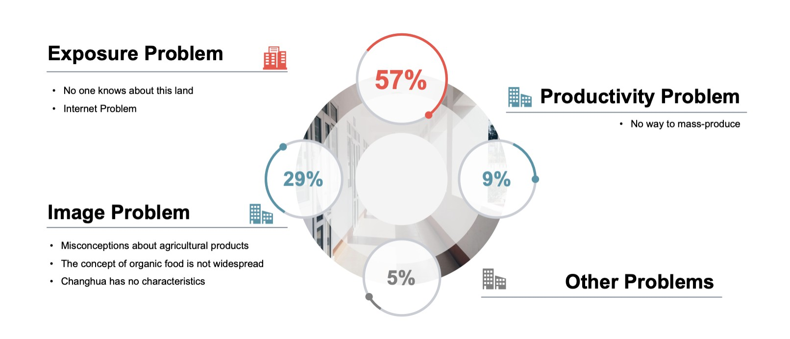
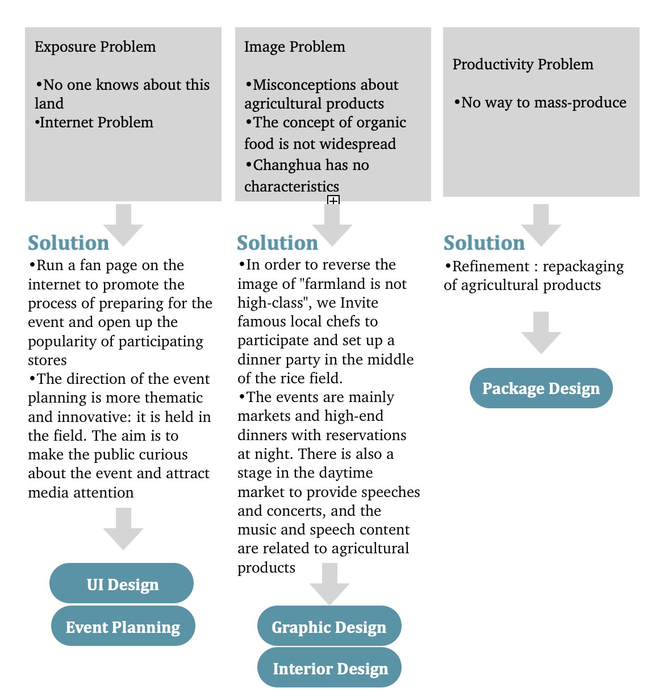
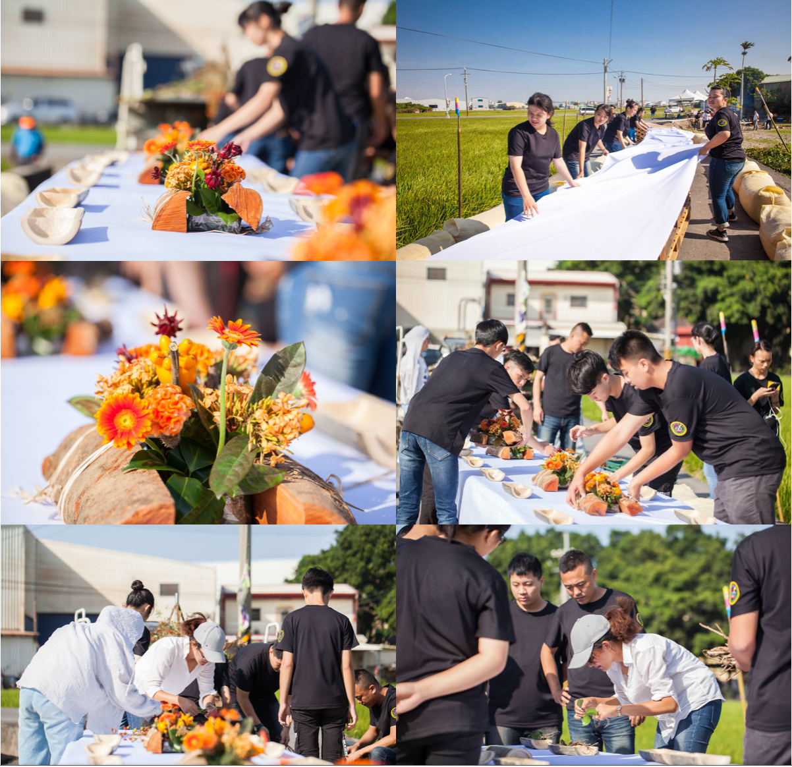
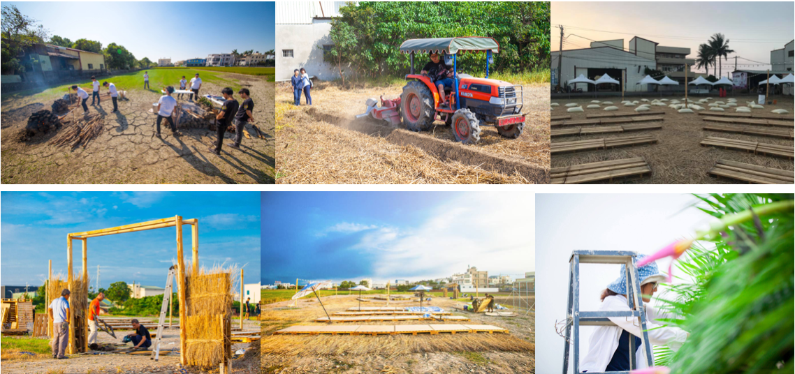
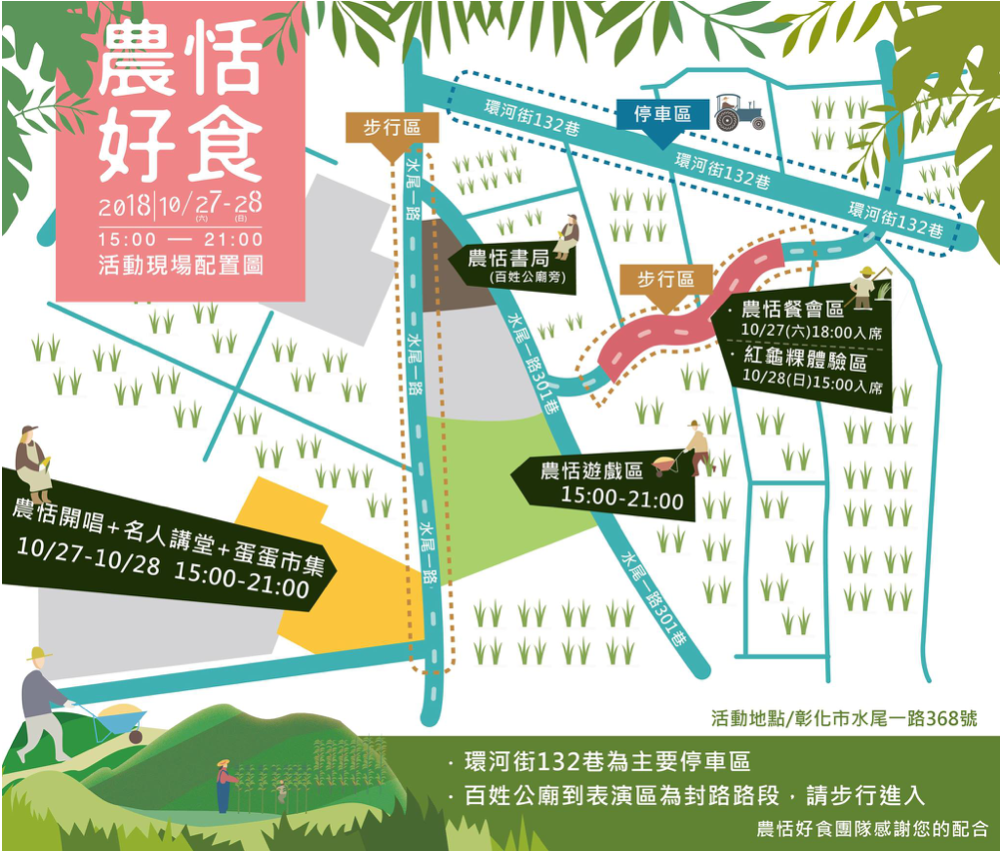
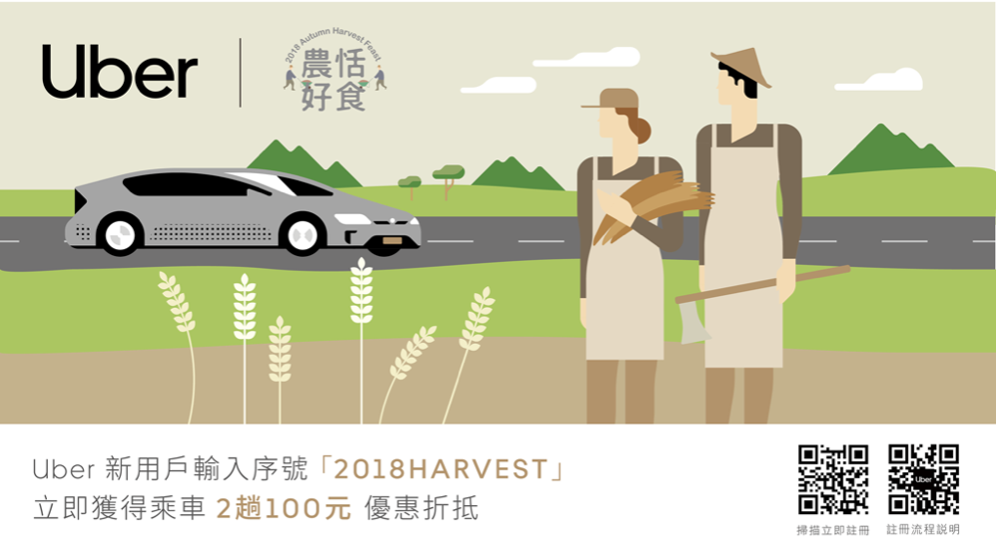
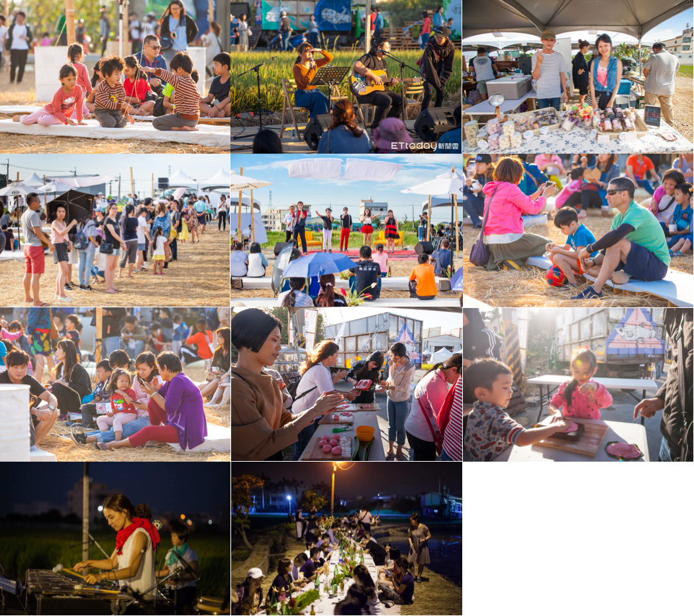

Music Festival and Agricultural Products Promotion
This project is about launching the 2017 Agricultural Harvest Feast – Good Eat Party after seeing how villages are declining, young people are migrating outward, and the elderlies are dying alone. The intention was to draw in crowds through events and bring people back to their hometowns. In this project, I created an online platform with promotion activities for farmers. By persuading the government and cooperating with local farmers, local bio-products were all sold out. Farmers not only received numerous orders but also profited millions from my online platform.
Design Background
Urban dwellers are eager to experience nature in the countryside and pursue organic living. Farmers in Changhua make some unique choices in planting crops that yield premium quality produce. Unfortunately, there is no visibility due to poor packaging and lack of marketing. Our role was to bridge the gap between urban and rural areas and create a marriage between the two.
Survey
I spent two months interviewing people who are agricultural workers. 50% of them are restaurant owners, 30% are sales of agricultural products, and 20% are agricultural producers.
 Design Intent
A music concert / market / buffet event that allows visitors to appreciate nature's beauty. Vendors are limited to local growers or suppliers of agricultural products. All the food and goods on sale are sourced locally.
Main Visual (Visual Elements)
Simplistic styles and color blocks convey a fresh and natural feel. The main visual features of landscapes in Changhua: rice paddies, farm produce, and farmers' day-to-day activities. Everything compliments the theme and creates visual clarity.
Main visual combined with marketing
Performing singers and e-commerce put up posters in the physical stores. Photos of the event's
main visual are placed on websites or Facebook pages.
We hope that such visualization will make a strong impression on the public, who will sense the
scale and significance of the event.
I assist participating stores in repacking their products, including copywriting and visual
design, and take commercial photographs of the merchandise displayed at the event.
Funding
While we looked for sponsors to make up for the funding shortage, we also wanted to reciprocate the generosity of others. We do so by giving free tickets to the Good Eat Party event to any sponsor whose contribution reaches a certain amount. The buffet was held in the middle of a rice paddy. The local farmers provided all the food and decorated the venue, featuring distinct oriental bamboos and indigenous florals in Changhua.
Layout
Preparation began roughly a month before the event, involving clearing the land, laying down the grass, installing standalone lighting, providing electricity, transporting pieces of pallets and sacks of chaffs. For visitors to experience the authentic farming way of life, every seat and visible element was sourced from the farmland. There were plenty of IG moments (green floral wall) and a kiddy area (padded with cleaned straws).
You can see the results videos and news about us below:
Transportation and Partnership
Being a farming area, Changhua has a high density of usable land. That said, we had to study the nearby car park, traffic routes, etc., in addition to event programming. We also went out of our way to partner with Uber to create a promotion code for event participants.
 Result and Reception
The influx of visitors was exceptional, and it was a very successful event that sold all the merchandise. I am confident in Changhua's farm produce. In a highly connected world, people who have tried the merchandise can make future purchases online.
You can see the results videos and news about us below: